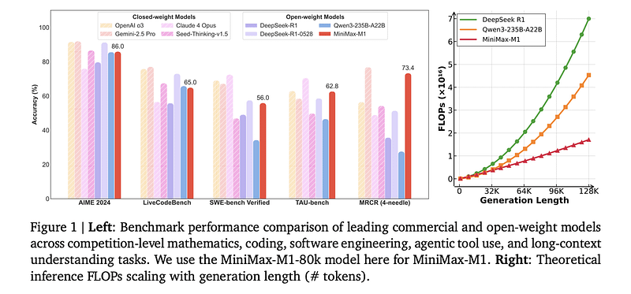

MiniMax M1: A New Contender in the AI Landscape
The artificial intelligence landscape is rapidly evolving, with new models and innovations emerging at an unprecedented pace. Among the latest and most significant entrants is MiniMax M1, a powerful large language model (LLM) developed by the Chinese AI company MiniMax.
This article explores the key features, technical specifications, market impact, and community reception of the MiniMax M1, highlighting its potential to transform the open-source AI ecosystem.
🏗️ Architecture: Hybrid Mixture-of-Experts (MoE)
One of the most significant aspects of MiniMax M1 is its hybrid Mixture-of-Experts (MoE) architecture. This design combines a dense model with a sparse multi-head encoder (MoE) approach. This allows MM1 to achieve a very large total parameter count, reportedly up to 456 billion for its largest variant, while only activating a fraction of these parameters for any given token. This selective activation makes the model highly efficient, striking a balance between performance and computational cost. This hybrid approach is considered a clever innovation that contributes to its strong performance.
📚 Context Window: 1 Million Tokens
A central selling point of the MiniMax M1 is its remarkable one-million-token context window. This capability allows the model to process and understand extremely long inputs, such as entire books, large codebases, or complex legal documents, within a single prompt. This places MM1 at the forefront of long-context LLMs, directly challenging established models in this domain.
Open-Source Availability
MiniMax M1 is released under the Apache 2.0 license, making it freely available for both academic research and commercial applications. This open-source approach is a significant development, continuing the trend of powerful open-source models emerging from China, following in the footsteps of models like DeepSeek and Qwen. This accessibility fosters wider adoption and innovation within the AI community.
Performance Benchmarks
Benchmarks shared by MiniMax and corroborated by third-party analyses indicate that MM1 is a top-tier open-source model. It demonstrates strong competitive performance, in some cases even surpassing other leading models like DeepSeek-V2 and Qwen2. While specific performance can vary across different tasks, including reasoning, coding, and multilingual capabilities, MM1 consistently ranks among the best.
Function Calling Capabilities
Beyond its core language understanding, MiniMax M1 also supports function calling capabilities. This feature enables the model to identify when external functions need to be invoked and to output the necessary parameters for these calls. This expands the utility of MM1, allowing it to integrate with other systems and perform more complex, multi-step tasks.
🏁 Competitive Landscape and Market Impact
The release of MiniMax M1 marks a significant moment in the global AI landscape, particularly in the context of the burgeoning competition between Western and Chinese AI developers. MM1 is positioned as a direct competitor to established models from major players like OpenAI (GPT-4), Google (Gemini), and Anthropic (Claude).
Challenging the Status Quo
For a long time, the leading edge of AI development, especially in large language models, has been dominated by a few prominent Western companies. However, the emergence of powerful open-source models from China, such as MiniMax M1, DeepSeek, and Qwen, is rapidly closing this gap. This shift signifies a more distributed and competitive global AI ecosystem, where innovation is no longer concentrated in a few regions.
Cost-Effectiveness and Efficiency
One of the compelling claims made by MiniMax is the cost-effectiveness of M1. The company states that M1 can process 80,000-token reasoning tasks using approximately 30% of the computing power required by models like DeepSeek. This efficiency, stemming from its hybrid MoE architecture, could significantly lower the barriers to entry for businesses and researchers looking to leverage advanced LLMs, making high-performance AI more accessible.
Impact on Open-Source AI
The open-source release of MiniMax M1 under the Apache 2.0 license is a critical factor in its market impact. By making such a powerful model freely available, MiniMax contributes to the democratization of AI technology. This encourages broader experimentation, development, and deployment of AI solutions, potentially accelerating innovation across various industries. The open-source nature also fosters a collaborative environment, allowing developers worldwide to build upon and improve the model.
💬 Community Discussion and Reception
The release of MiniMax M1 has generated considerable excitement and discussion within the AI community, particularly on platforms like X (formerly Twitter) and Reddit. The overwhelmingly positive reception highlights several key aspects that resonate with developers, researchers, and enthusiasts alike.
Excitement for Open-Source Alternatives
A primary point of discussion revolves around the availability of another powerful, open-source alternative to proprietary models. Developers are eager to explore MM1 as a viable option alongside models from Meta (Llama), Google, and Anthropic. This increased competition is seen as a healthy development for the AI ecosystem, fostering innovation and providing more choices for various applications.
The Power of the 1 Million Token Context Window
The 1 million token context window is a major highlight and a frequent topic of conversation. The community is actively exploring the practical implications and potential applications of such a vast context length. Use cases being discussed include:
- Analyzing entire legal documents
- Processing extensive research papers
- Understanding large codebases for debugging or development
- Engaging in long-form creative writing tasks that require extended memory
This capability is viewed as a game-changer for functions that require a deep understanding of context.
China's Growing AI Prowess
The release of MiniMax M1 is widely interpreted as further evidence of China's rapidly advancing capabilities in the foundational model space. Companies like MiniMax, 01.AI, Zhipu AI (GLM), and DeepSeek are increasingly recognized as major players on the global stage. This growing influence from Chinese AI firms is viewed as a significant trend, contributing to a more diverse and globally competitive landscape for AI research and development.
Architectural Innovation
AI researchers and enthusiasts have also focused on the architectural innovation behind MM1, particularly its hybrid MoE approach. They note that this method is a clever way to balance performance and computational cost, representing an essential architectural innovation in the field of large language models. The ability to achieve high performance while being computationally efficient is a key factor in the model's appeal and its potential for widespread adoption.
🎯 Conclusion
MiniMax M1 represents a significant leap forward in the development of large language models, particularly within the open-source domain. Its innovative hybrid Mixture-of-Experts architecture, coupled with an unprecedented 1 million token context window, positions it as a formidable competitor to established proprietary models. The open-source release under the Apache 2.0 license further democratizes access to advanced AI capabilities, fostering innovation and collaboration across the global AI community.
The enthusiastic reception from the AI community underscores the importance of MM1 as a powerful, efficient, and accessible tool for a wide range of applications. Its emergence also highlights the growing strength and influence of Chinese AI companies in shaping the future of artificial intelligence. As the AI landscape continues to evolve, MiniMax M1 is poised to play a crucial role in driving further advancements and expanding the possibilities of what LLMs can achieve.
Thanks for reading!
Enjoyed this article? Subscribe to the newsletter to get notified when new posts go live.